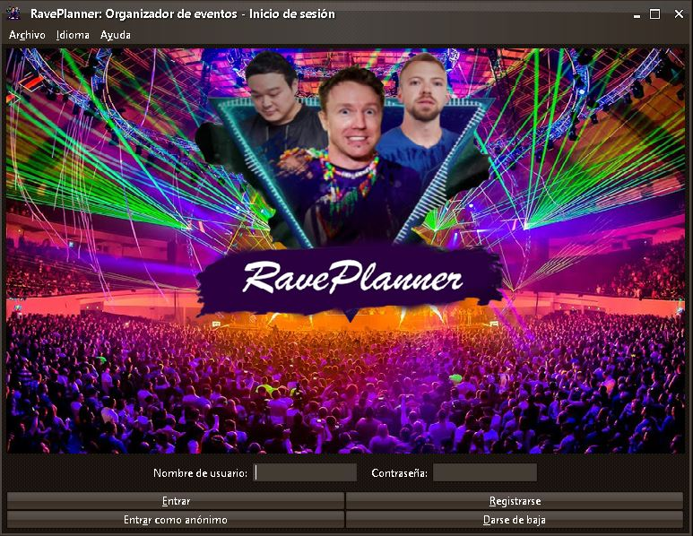

Acceso a RavePlanner
Una vez hayamos ejecutado el organizador de eventos RavePlanner,
se nos mostrará la ventana de bienvenida, en la que podremos encontrar
cuatro botones y dos áreas de texto, objetos los cuales nos permitirán
realizar cuatro tareas distintas:

- Entrar: Habiendo escrito correctamente nuestras credenciales
de acceso a RavePlanner, esta opción nos abrirá la ventana principal
del programa. Tendrás derecho a un módico descuento en tus compras.
- Registrarse: Si aún no tienes cuenta de RavePlanner, tienes
la posibilidad de registrarte escribiendo las credenciales que desees
tener y dándole a este botón. El nombre de usuario no podrá ser
ninguno de los que estén ya en uso.
- Entrar como anónimo: Tienes la posibilidad de acceder a la
plataforma sin tener que registrar ninguna credencial en el sistema,
aunque no tendrás derecho al descuento para usuarios registrados.
- Darse de baja: Si estás registrado en nuestro sistema y
deseas darte de baja, podrás hacerlo escribiendo tus credenciales y
dándole a este botón.